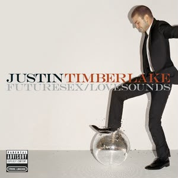
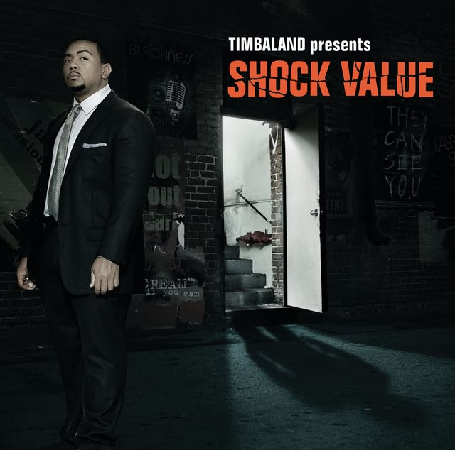
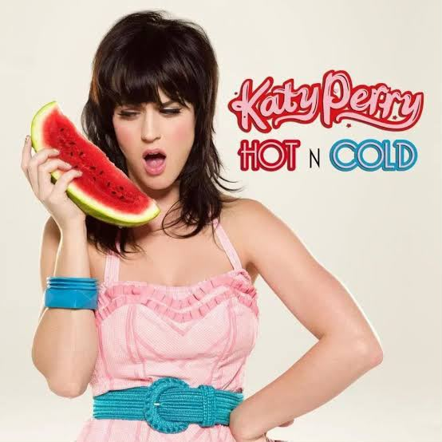
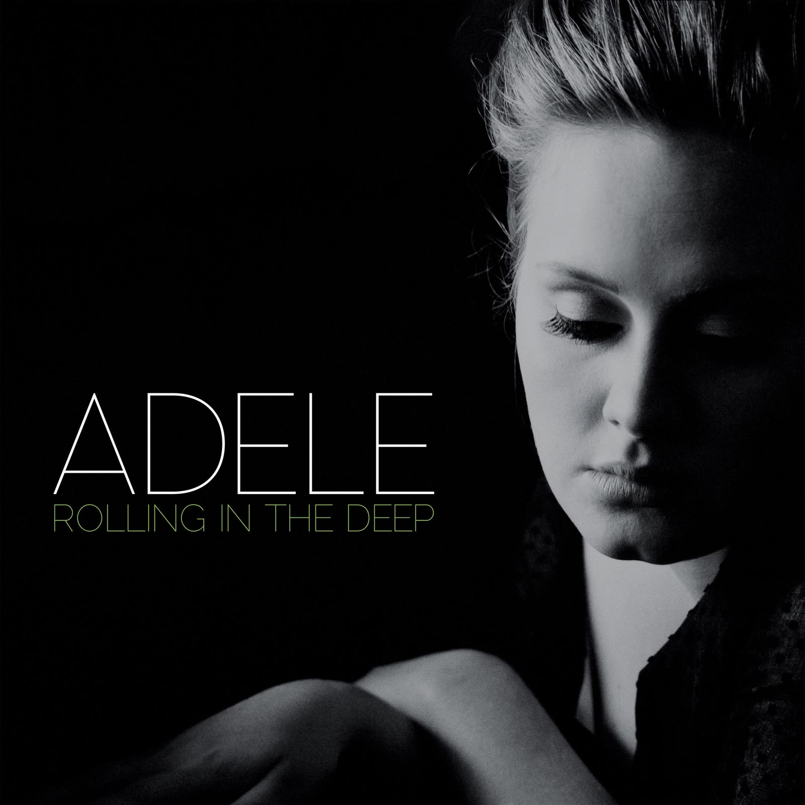
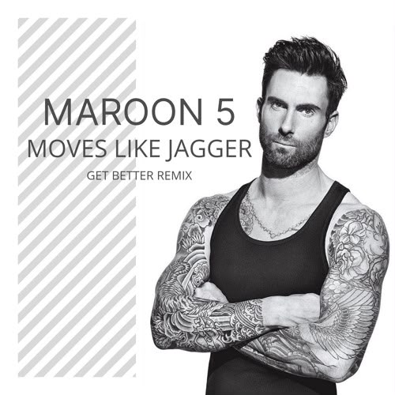

Michael Jackson
Billie Jean
Un hito de los años 80 con una línea de bajo icónica que revolucionó la música y el video musical en MTV.
Género Musical
El pop prioriza la melodía pegajosa y la producción pulida por encima de todo: es el género pensado para sonar en cualquier radio del mundo.
Michael Jackson
Un hito de los años 80 con una línea de bajo icónica que revolucionó la música y el video musical en MTV.

Selena Gomez
Una balada emotiva impulsada por el piano que muestra la faceta más íntima y madura del pop contemporáneo.

Mark Ronson ft. Bruno Mars
Una fusión perfecta de pop clásico y funk repleta de energía, metales y un ritmo contagioso.

Justin Timberlake
Un hit icónico de 2006 con influencias de R&B y dance-pop que transformó el sonido pop de mediados de los 2000.

Timbaland ft. OneRepublic
Una de las baladas pop-rock más influyentes de 2007 que catapultó a OneRepublic a la escena global.

Katy Perry
Hit electropop enérgico de 2008 con estribillos pegajosos que definieron la era dorada del pop de Katy Perry.

Adele
Mezcla potente de pop, soul y blues que rompió récords globales e impulsó su álbum '21'.

Maroon 5 ft. Christina Aguilera
Un himno de disco-pop contagioso de 2011 impulsado por silbidos icónicos y ritmos bailables.
One Direction
El sencillo debut de 2011 que encendió el fenómeno global de las boy bands en la década de 2010.
Estribillos memorables, estructuras cortas y directas, y una producción cuidada para que cada elemento suene nítido en cualquier bocina.